The Problem
RealPDE asks models to predict real fluid flows. Our solution forecasts 20 future velocity frames from 20 observed frames on a 32 × 64 grid, together with uncertainty bounds. We train a SimVPv2/gSTA model on the released real recordings, then refine its predictions with small learned postprocessing networks.
Track 1 (T1) uses the current input window; Track 2 (T2) can also use earlier observations from the recording. The strongest T1 setup combines last-frame conditioning, locally scaled residual prediction, flow-aware augmentation, and separate final paths for point forecasts and uncertainty. T2 keeps that architecture and adds seven causal history features summarizing observations before the current window. Its weights stay fixed during inference.
The story is in the choices: what information to expose, which transformations preserve the forecasting task, and where the objectives benefit from their own capacity. Each chapter below explains the intuition, the implementation and the evidence.
Validation forecasts
Two best and two worst validation conditions. Compare the measured flow, our T2 forecast and its error across 20 future frames.
Re 8,863 · AoA 0°
Best · 1/16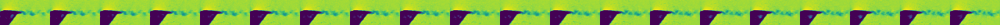
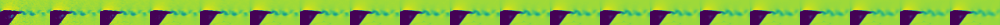
Re 5,028 · AoA 5°
Best · 2/16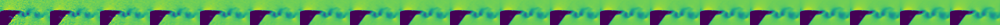
Re 25,482 · AoA 15°
Worst · 15/16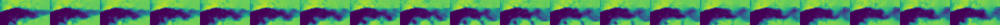
Re 25,482 · AoA 20°
Worst · 16/16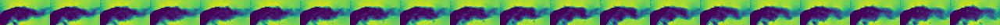
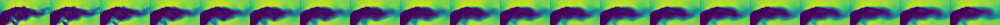
Reading the plots & selection details
Measured future and forecast show speed on the same color scale within each condition. Error is the magnitude of the velocity-vector difference, with one scale across all four conditions. The three panels show the same spatial region.
| Condition | Speed range |
|---|---|
| Re 8,863 · AoA 0° | 0–0.150 |
| Re 5,028 · AoA 5° | 0–0.096 |
| Re 25,482 · AoA 15° | 0–0.466 |
| Re 25,482 · AoA 20° | 0–0.461 |
We rank the 16 complete validation recordings by local quality without runtime, then show a median-error window from each selected recording. Re is Reynolds number; AoA is angle of attack. Both come from the recording metadata.
Forecasts use the exact submitted T2 weights. Selection and inference record.
How we built it
Explore our process by looking at the biggest improvements
01Input features and residual prediction
Give the model a reference state, then ask it to predict the change.
Last-frame conditioning and residual targets
We repeat the last observed u/v channels at every input step. Earlier frames describe motion; the last frame anchors its current position. This is already part of T1.
y: future velocity · s: local fluctuation scale · r: residual. A zero residual predicts persistence.
Last observed
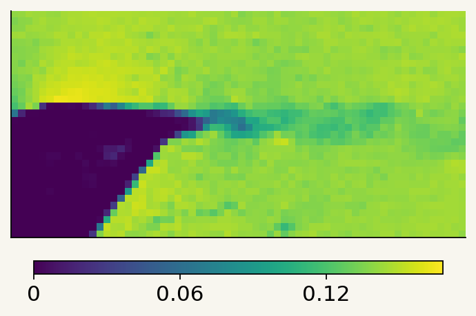
Measured future
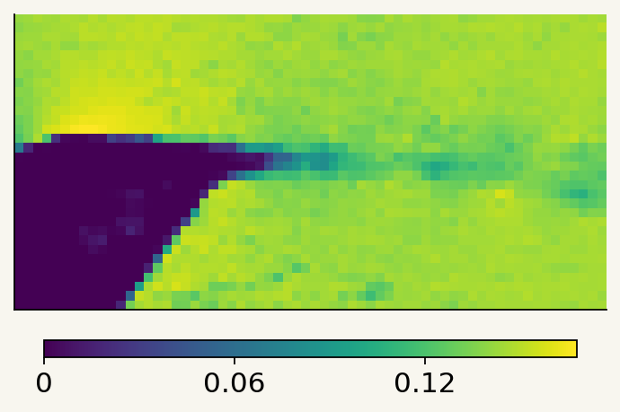
Target residual
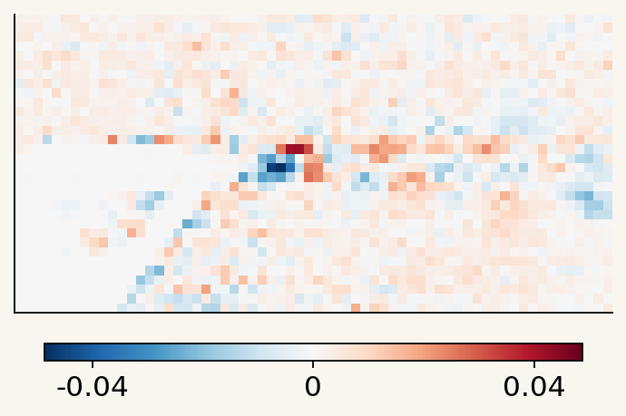
Local normalization and statistical features
Normalize each location by its recent mean and smoothed fluctuation scale. Feed those statistics back as channels, preserving the magnitude information.
Local mean μ
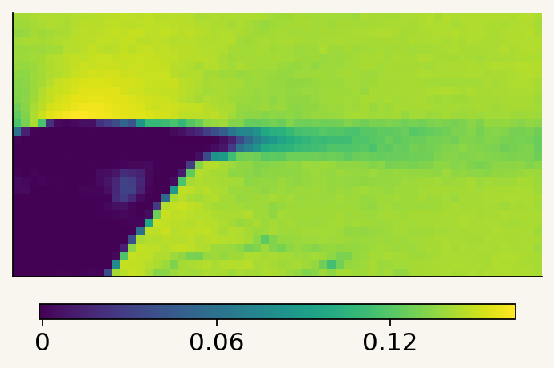
Fluctuation scale s
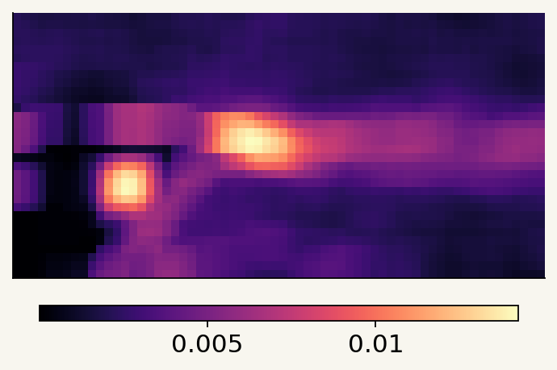
Normalized last frame
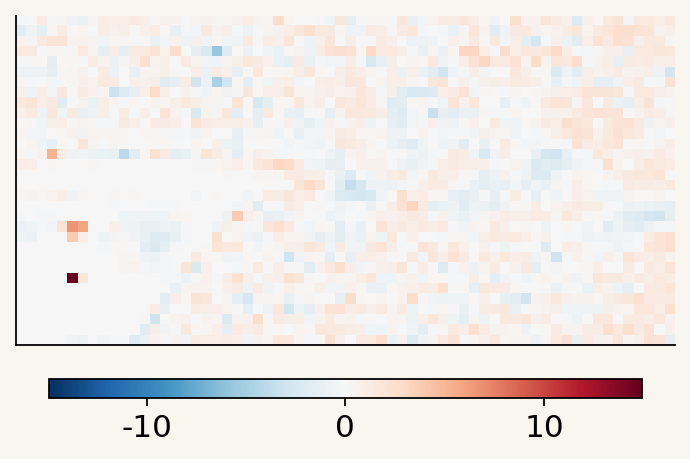
Experimental evidence and implementation
Residual targets and normalization are established forecasting tools; GraphCast uses normalized residuals. We combine them with repeated last-frame channels and flow-specific local statistics.
- Earlier matched residual-target experiment: 82.405 → 82.772 local quality.
- Compact U-Net local-scale experiment: 79.504625 → 79.868741.
These are separate development stages, not additive gains. The last-frame concatenation comparison used different splits, so it has no isolated effect size.
The 18-channel stem combines u/v, last-frame u/v, sliding mean/MAD/standard deviation, window means, and log scales at 5×5, 3×3 and 9×9 neighborhoods. The plot uses a positive scale floor; training ties that floor to fitted channel statistics.
Real recording 10125_0.h5. Evidence: T1 METHOD §§2, 8.3–8.5. Figure provenance.
02View augmentations
We introduced cropping to address the overfitting we observed.
The idea: vary the field of view so the model relies less on a fixed full-field layout and learns from local flow patterns.
Spatial cropping
25% of the area, used in 50% of samples. Native crops expose fine local structures. Full-field stride-two views preserve global context.
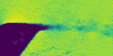
Move the crop. Inputs and targets keep the same coordinates.
Crop-size ablation
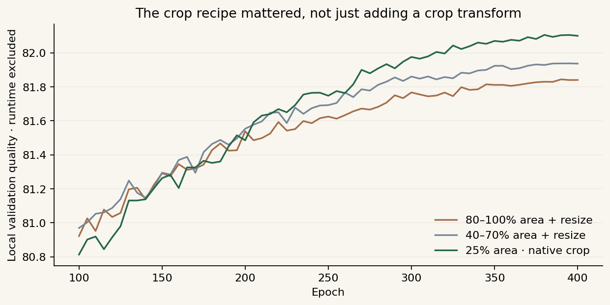
| Crop recipe | Best quality | Epoch | TKE |
|---|---|---|---|
| 80–100% area + resize | 81.8438 | 390 | 80.8037 |
| 40–70% area + resize | 81.9379 | 395 | 80.8813 |
| 25% area · native crop | 82.1057 | 380 | 81.3274 |
Same split, seed, base recipe and 400 × 800 updates. The milder crops resize with bilinear interpolation; the retained crop preserves native samples. This tests the full crop recipe, not area alone.
Our quarter-area crop removes much more context than the 80–100% and 40–70% resized crops we tested, yet gave the best validation result. It keeps native samples and alternates with full-field views.
Related work
Small crops are established in vision: Torchvision's RandomResizedCrop defaults to 8–100% of image area. Spatial cropping also appears in PDE representation learning, including Mialon et al. (NeurIPS 2023) and PIANO.
Our experiment tests native quarter-field crops as regularization for supervised velocity forecasting. The result supports this particular recipe; those earlier works study different objectives.
Same-recording mixup
Mix two non-overlapping windows from the same recording. One coefficient blends both inputs and targets.
Window A
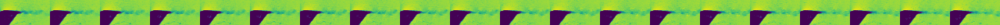
Window B
Mixed
Inputs and targets advance together. The mixing weight stays fixed during playback. All panels share a speed scale: 0–0.172.
Vertical reflection
v′(row, col) = −v(H − 1 − row, col)
Original v
Image flip only
Flip + negate v
The same observed frames in all three panels. Blue: negative v. Red: positive v.
Augmentation settings & evidence
Mixup is established; selecting partners from the same recording keeps the flow condition consistent. T1 development quality was 82.054000 for same-recording mixing versus 81.983664 across recordings.
T2 mixes every sample using a folded Beta(0.5, 0.5) draw. The crop studies used mixup probability 0.5 and alpha 0.2. Full-field views sample all four stride-two spatial phases.
Crops and reflections stay aligned across inputs, targets and history maps. Reflecting v intervals also swaps their negated lower and upper endpoints.
Real recording 10125_0.h5 · Re 10,142 · AoA 0°. Figure provenance.
03Model architecture and training losses
Share most of the model. Give point prediction and uncertainty their own final block.
A sharp forecast and a useful uncertainty estimate need different features. Splitting late gives each objective capacity while keeping most computation shared.
Residual and fluctuation-energy losses
Selected T2 objective. TKE terms reward temporal fluctuation energy at two spatial scales.
Pixelwise error alone can favor smooth forecasts. Energy terms encourage the model to retain the flow's variation; quantile and SPS losses train the uncertainty bounds.
Architecture choices & experiment results
We build on SimVPv2/gSTA: spatial encoding, temporal translation and spatial decoding. Shared features with separate task heads follow a familiar multi-task learning pattern.
The first seven translator blocks are shared; the final gSTA block and decoder are separate. The point output is detached before the interval loss. Both objectives still train the shared backbone through their own paths.
| T1 development milestone | Local quality |
|---|---|
| SimVPv2 + joint SPS | 81.971903 |
| Cropping + 800 updates | 82.105752 |
| Dedicated late SPS path | 82.151385 |
These milestones summarize complete configurations. T1 also used an MVPE loss; the selected T2 recipe omitted it. Interval training combines quantile-style supervision with a smooth direct-SPS objective.
Evidence: T1 METHOD §§2, 4, 8; T2 METHOD §§2, 4–5. Quantile-based uncertainty background.
04T2 history features
T2 adds seven maps from earlier observations to our strongest T1 architecture. The weights stay fixed.
The past tells us what is typical. Comparing it with the current window reveals shifts in mean flow, variability and fluctuation energy.
Mean shift · u
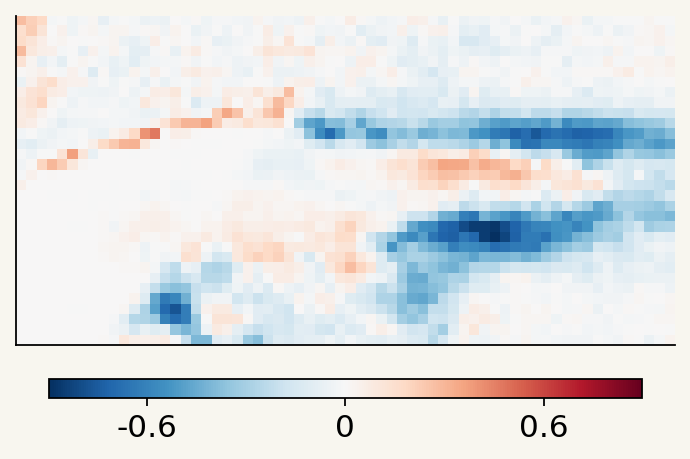
Mean shift · v
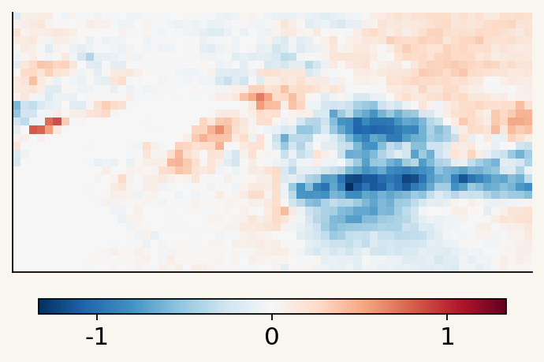
Log-scale shift · u
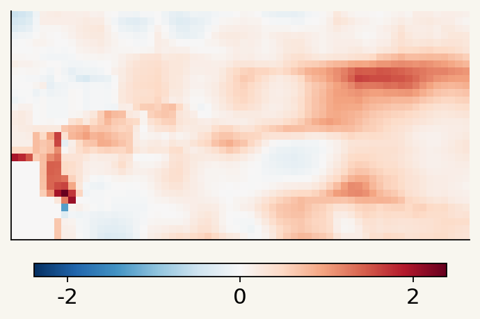
Log-scale shift · v
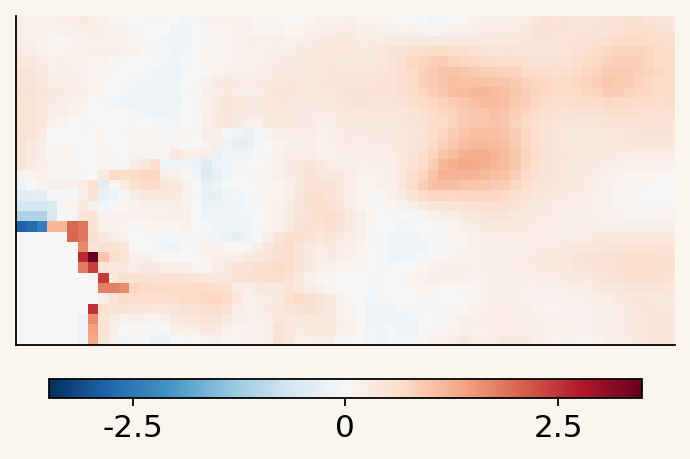
History confidence
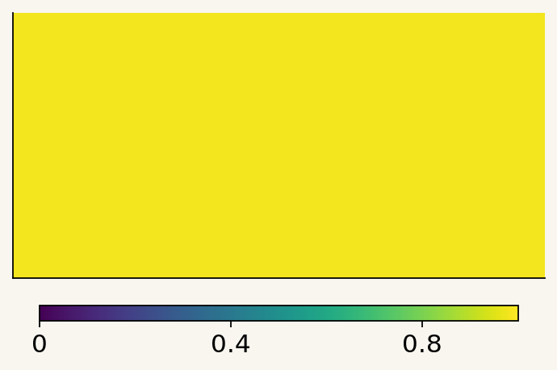
Window energy · u
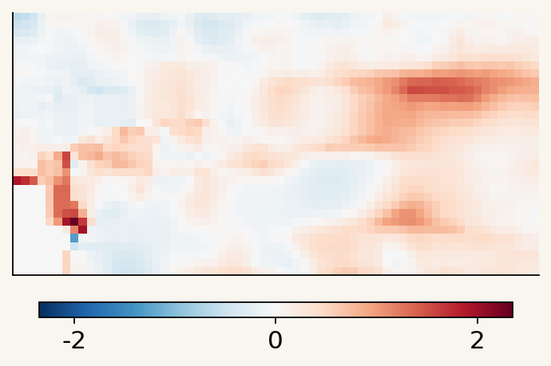
Window energy · v
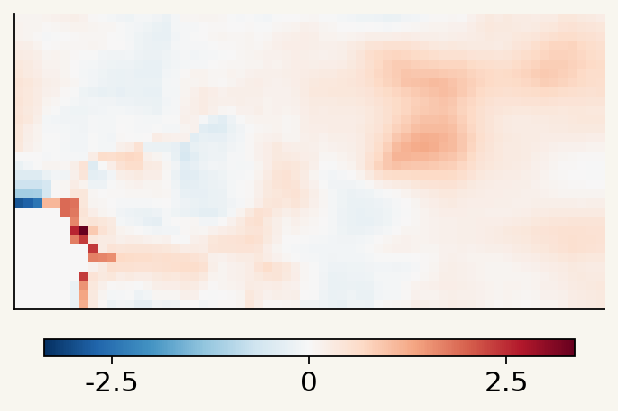
Actual feature maps: Re 25,482 · AoA 15° · 180 prior frames. Each map has its own scale.
A small projection adds 3,537 parameters—about 0.018% of the T1 model.
Feature definitions and validation results
Mean and log-scale channels compare the historical flow with the current window. The energy channels use average variance within completed windows, separating fluctuations from changes in window means.
Confidence grows with prior-frame count. Running sums keep memory fixed; state resets at recording boundaries. Future targets never enter it. Mixup uses the common prefix before both windows.
Running statistics are standard. The seven-map representation and its injection into the spatial stem are our design choices: a 7→32 linear convolution plus a 7→16→32 nonlinear path, initialized as a zero correction.
| Original package | Local quality | Velocity MAE |
|---|---|---|
| T1 | 82.509437 | 0.005760069 |
| T2 | 82.713986 | 0.005638215 |
+0.204549 quality; 2.115% lower MAE. This compares complete packages: T2 also changed mixup, precision, losses, checkpoint selection and PP caching.
Same 16 validation recordings and 653 windows. Evidence: T2 METHOD §§2–4, 6, 8. Figure provenance.
05Prediction postprocessing
Refine the forecast's energy and uncertainty with small learned correction networks.
Averaging predictions can smooth fluctuations. Four small KE networks correct the forecast; a width CNN adjusts uncertainty bounds and shifts.
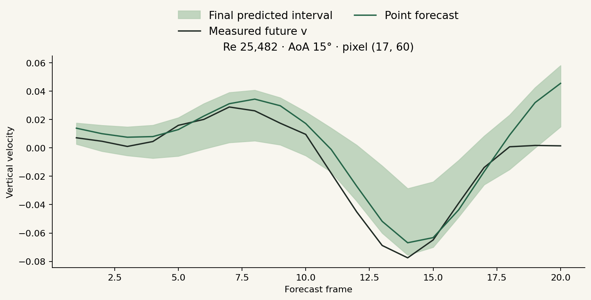
Postprocessing methods and validation results
Native and vertically reflected inputs run as a packed pair. Mapping back reverses rows and negates v; interval endpoints swap under negation. At fixed T1 checkpoint weights, this TTA step improved quality 82.105752 → 82.188882.
The full correction stage combines midpoint blending, analytic fluctuation-energy corrections, four small KE networks, a width CNN and fitted width calibration. These are lightweight correction models, not four full forecasters.
| T2 pipeline | Before finishing stage | Final quality |
|---|---|---|
| Original submission | 82.485017 | 82.713986 |
| Fresh reproduction | 82.467032 | 82.708458 |
The original archive transferred PP from an earlier T2 model. The final training package freezes the new forecaster and fits fresh corrections on 65 optimization recordings, keeping the 16 validation recordings separate.
The figure shows final bounds, not a before/after comparison. Evidence: T1 METHOD §§5–8; T2 METHOD §§4–8.
06Inference optimization and reproducibility
We optimize neural inference, postprocessing and history updates together.
Mixed precision reduces neural computation. Graph replay reduces launch overhead. Running statistics keep history storage fixed as the recording grows.
Runtime details & reproduction evidence
CUDA Graphs and mixed precision are standard tools. We adapted the fixed-shape predictor, history updates and PP to work together under graph replay. Physical statistics and returned arrays stay FP32; returned predictions own their storage.
The offline Docker pipeline trains the forecaster, fits fresh PP, exports the model and checks the predictor interface. All learned components start from random initialization.
| T2 package | Local quality | Velocity MAE |
|---|---|---|
| Original submission | 82.713986 | 0.005638215 |
| Fresh reproduction | 82.708458 | 0.005650316 |
Training totaled 9h 38m 52s across two Colab sessions, including scheduled validation. PP cache generation, fitting and export took 25m 45s. These are measured stage durations, excluding downtime and recovery work.
Both evaluations use the same 16 recordings and 653 windows. Evidence: T2 METHOD §§7–9 and completed-run reports.
Team Pistachio · Built on SimVPv2/gSTA.